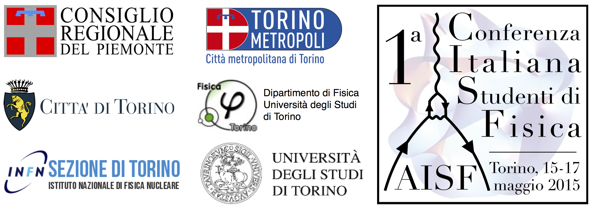

Sponsor
Un contributo per la migliore conferenza possibile


La CISF è organizzata dall'Associazione Italiana Studenti di Fisica con il benestare e il patrocinio di alcuni enti presenti sul territorio. Tra di essi risultano:
Se sei interessato a supportare e sponsorizzare la CISF puoi scrivere un'email a questo indirizzo.
Contribuisci a diffondere la notizia su questa conferenza sui social media! L'hashtag ufficiale è #CISF2015.
Abbiamo anche un poster che è possibile liberamente stampare e distribuire.